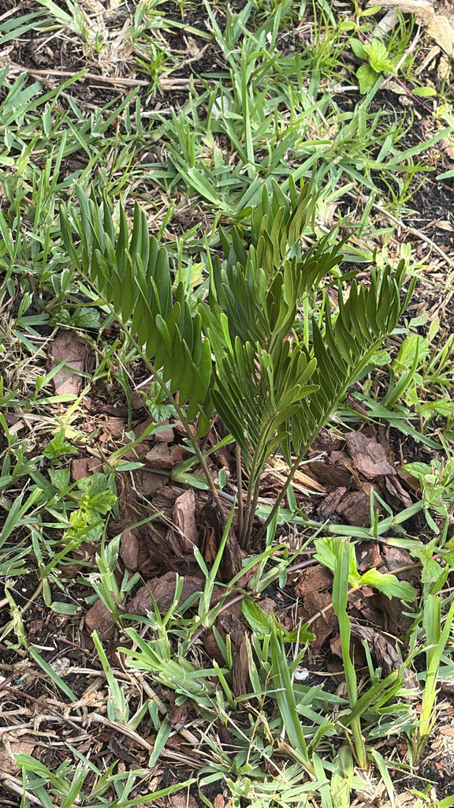

- Florida's only native cycad — and the only native cycad in all of North America. Cycads as a group have barely changed in 300 million years.
- The starch from its roots fed Seminole communities, Confederate soldiers, and eventually Nabisco — which ground up to 20 tons of coontie per day for animal crackers until the FDA banned it in 1925.
- It's the sole host plant for the Atala butterfly, which was considered locally extinct in Florida until 1979, when naturalist Roger Hammer rediscovered a colony on Virginia Key near Miami.
- As the coontie has returned to Florida landscapes, the Atala has followed — watch this plant for the butterfly's brilliant red-and-blue wings.
Native to Florida, Georgia, the Bahamas, and parts of the Caribbean. In Florida found in sandy upland forests, pine flatwoods, coastal hammocks, and shell middens throughout the state. The only native North American cycad.
- Cycad fossils date back to roughly 300 million years ago — this plant was thriving before the Atlantic Ocean existed in its current form. It watched the dinosaurs come and go. Compared to that resume, its brush with extinction at the hands of the animal cracker industry seems almost undignified.
- The starch industry was relentless. Florida coontie factories ground the roots into flour sold as 'Florida arrowroot' — used in baby food, animal crackers, beer, and WWI rations. Nabisco ran operations grinding up to 20 tons per day. Because each coontie plant takes up to a decade to mature, wild populations collapsed under the harvest pressure.
- The last commercial factory was destroyed by the 1926 Miami hurricane. The FDA had banned the practice a year earlier.
- The Atala butterfly story is one of Florida's great conservation turnarounds. Considered locally extinct for decades, it was rediscovered in 1979 by naturalist Roger Hammer on Virginia Key — a small island between Miami and Key Biscayne. Every Atala colony in Florida today is believed to descend from that single group.
- As coontie has returned to Florida gardens, the Atala has expanded northward into Manatee County. Plant this, and you may well see them here.
- The pollination system is unusual even by cycad standards: a tiny weevil pollinates the plants and uses the pollen-bearing cones as food for its larvae — but if the larvae try to eat the seed-bearing cones instead, they are poisoned. The plant rewards its pollinator at one cone type while defending the other with toxin.
The Coontie's ecological value is concentrated in one relationship: it is the sole larval food plant for the Atala butterfly (Eumaeus atala), a species found nowhere outside Florida and the Bahamas. The caterpillars absorb the plant's cycasin toxin and become poisonous themselves — bright red coloring warns predators off.
The Atala's recovery from near-extinction is directly tied to the return of this plant to Florida landscapes. The echo moth (Sierarctia echo) also uses it as a larval host. The dense, low clumping form provides excellent ground-level cover for lizards and small ground-feeding birds.
each plant is either male or female and produces separate cones. Both needed nearby for seed production.
elongated, pollen-bearing, attracting the tiny weevil pollinators.
larger, seed-bearing, defended by toxins against larval feeding.
fleshy, red-coated. The red seed coat must be removed before germination. Nitrogen-fixing cyanobacteria live in root nodules.
The underground fleshy stem (caudex) can be substantial in old plants and sends up new leaves quickly after fire or disturbance.
Dark green, glossy, fern-like pinnate fronds rising from the central crown in a low rosette. Stiff and leathery with smooth leaflet edges.
The low, palm-like rosette of dark glossy fronds is distinctive at ground level. Look at the base for cones — male and female cones look noticeably different and both are worth examining.
Most importantly: look for bright red Atala caterpillars with yellow spots feeding on the fronds in warm months, and watch for adult Atala butterflies with their black wings, blue iridescent spots, and vivid red-orange abdomen.
Processed starch only — highly toxic raw. Florida Indigenous peoples made safe arrowroot flour through an elaborate process of powdering, soaking, and repeated rinsing. Not safe to eat without full processing.
All parts contain the toxin cycasin. Highly toxic if ingested without processing — causes gastrointestinal and neurological effects. Keep pets away from the plant; dogs are particularly susceptible. The Atala caterpillars absorb the toxin and become poisonous themselves — do not handle red caterpillars on the fronds.
Highly toxic to dogs. Coontie/cycads contain cycasin; ingestion can cause severe liver failure and is frequently fatal. Dogs are attracted to the plant — one of the most dangerous in the collection for pets (ASPCA).
- © Randall Carter (CC-BY-NC), via iNaturalist